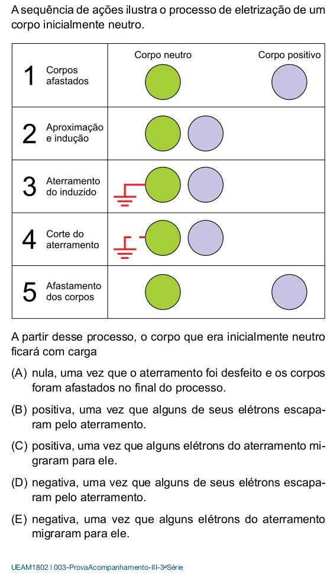

Questões de revisão: Processos de eletrização
Questão 1
a) Explique o que acontece com os elétrons quando dois materiais diferentes são atritados. Por que um corpo fica carregado positivamente e o outro negativamente?
b) Dê dois exemplos práticos de eletrização por atrito e descreva como ocorre a transferência de elétrons em cada caso.
Questão 2
a) Se uma esfera metálica carregada negativamente tocar outra esfera idêntica neutra, qual será a carga final de cada uma? Justifique sua resposta.
b) Duas esferas idênticas tem cargas, respectivamente, \(+10 \,C\) e \(-5\,C\) . Ao tocar essas duas esferas, qual será a carga final de cada uma? Justifique sua resposta.
Questão 3 - SIS-UEA-2018

Questão 4 - SIS-UEA-2016

Questão 5 - SIS-UEA-2014

Questão 6 - SIS-UEA-2019